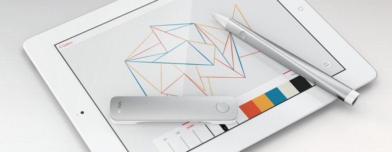

Tools For the New Creative
September 17, 2013 by The Creative Cloud Team
When we shared our vision for the Creative Cloud at MAX, we said it would give us the opportunity and the impetus to innovate – and ultimately empower a new generation of creatives. With full hearts and open minds we also shared our first explorations into the future of creative hardware.

Today, I am excited to share the next milestone on this path: Adobe is moving our cloud pen, Project Mighty and our digital ruler, Project Napoleon, from a technology exploration to a planned product. We are teaming up with Adonit, an awesome band of makers with a shared belief in the power of creative devices paired with apps and services, to manufacture and ship Mighty and Napoleon in the first half of 2014.
We are also unveiling an energetic new campaign, "I am the New Creative," celebrating the contemporary creative through a series of remarkable self portraits by Joshua Davis, Dylan Roscover, Anita Fontaine and many more. We believe tools define generations– and that you should be able to create from anywhere, explore new mediums and go wherever your ideas take you.
With our first tools for the new creative — Project Mighty and Napoleon — we are confident that we can help make digital creativity both more accessible and more natural by combining the accuracy, expressiveness and immediacy of pen and paper with all the advantages of our digital products and the Creative Cloud. As we shared in our initial demo, Project Mighty is pressure sensitive, which helps it draw a natural and expressive line. It is also connected to the Creative Cloud, giving you the ability to carry all of your favorite personal digital assets, brushes and colors with you, copy/paste across devices and more.
Since our day jobs are designing software, we are also looking at how this family of hardware might impact what our software could be. Adobe has already pioneered some of the most widely used tablet apps in the creative space, including Adobe Ideas and Photoshop Touch, that are relied on by millions of creatives around the world. Today we are unveiling two sneak peaks in this realm that we think really move the combined hardware and software experience forward: Project Parallel, a drafting iPad app designed and developed from scratch for the Project Napoleon hardware. The second, Project Contour, is essentially Kuler for shapes ⊣ take a photo of a favorite object or shape on an iPhone and access it with Napoleon on the iPad to simplify architectural line sketching, drawing and ideation. Together, they enable what we like to call "straight line sketching," a simple and expressive way of getting your creative ideas recorded.
Through natural interface, cloud connectivity and now new hardware, we are starting the process of creating tools for the next generation of creatives and redefining the playing field for designers. I am looking forward to this next chapter for innovation at Adobe. It's going to be a fun year. I can't wait to share what we are currently exploring. Be sure to stay tuned here for what's coming next.